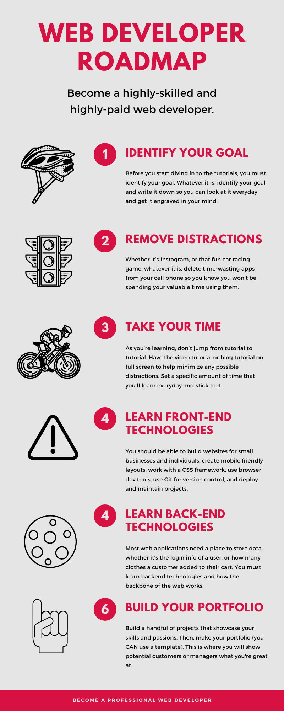
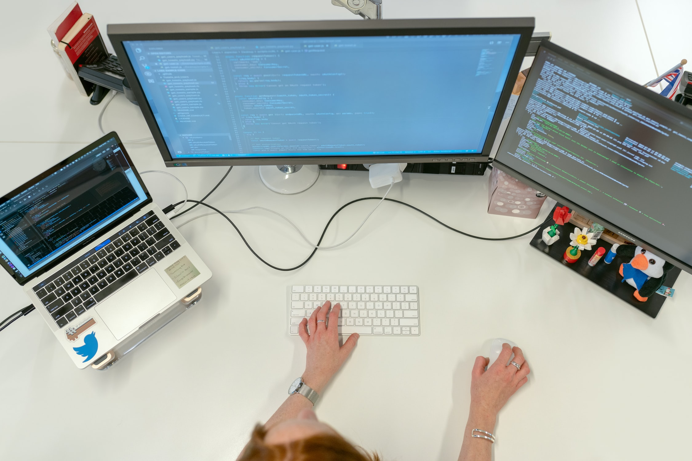
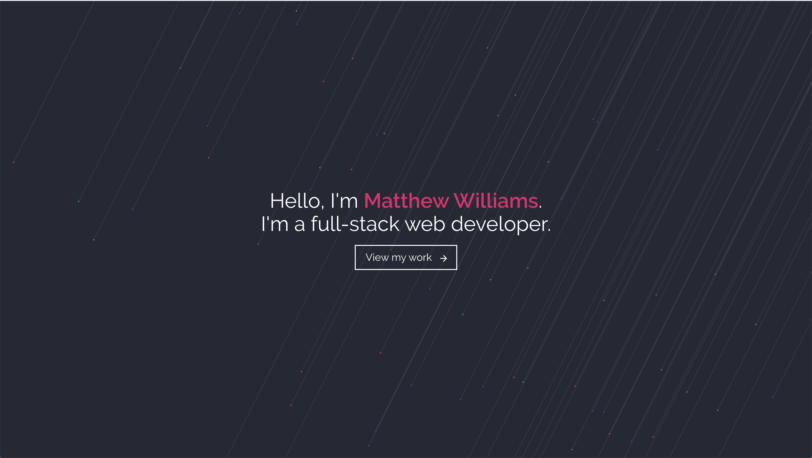
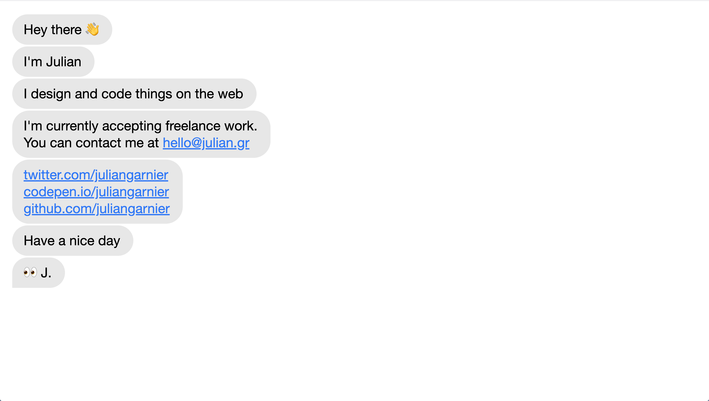
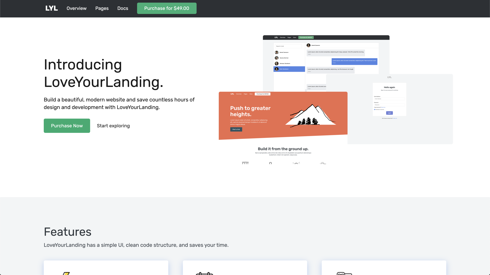

This is everything I've learned in my web developer journey.
Web development is one of the most valuable skills to learn. If you learn how to build stunning websites and applications with HTML, CSS, JS, and more, not only will you make lots of money, you will also have a valuable skillset that will enable you to build applications that people will buy and use everyday. I started teaching myself web development when I was only 11, here's everything I learned.
First, identify your goal
Before you start diving in to the tutorials, you must identify your goal. Is it to make money? Or is it to get a secure job at a company like Microsoft? Whatever it is, identify your goal and write it down so you can look at it everyday and get it engraved in your mind.
You can work as a developer at a company, work as a freelancer, create your own business, become a consultant, code for fun, or create an app to make money.
Once you identify your goal, you should move on to removing all distractions to make sure you use your valuable time wisely.
Get rid of all distractions
Distractions are everywhere. On the internet, in your house, and on your phone. It is critical that you remove these time-wasting distractions from your life, because if you don't, you probably won't end up where you wanted to be.
1. Delete time-wasting apps on your cell phone
Whether it's Instagram, or that fun car racing game, whatever it is, delete time-wasting apps from your cell phone so you know you won't be spending your valuable time using them. You should also keep your cell phone off or in a separate room from where you're working.
Email is an important part of work for many people. However, it's also important that you minimize the time you spend on email to create a more focused working environment.
According to a recent study, "the overall time Americans spend on various media is expected to grow to nearly 11 hours per day this year, after accounting for declines in time spent with other media like TV and newspapers that are increasingly moving online, according to Zenith."
2. Create a clean and organized work environment
When you work in a messy environment, you feel messy. On the other hand, when you work in a clean and organized environment, you're more likely to be more productive. You'll also feel physically better because of the minimized dust.
3. Work in a quiet environment
Imagine trying to focus in a bar. The loud music and people will distract you and prevent you from being able to focus on your work. The same holds true for your work environment at home.
If you live by yourself, this shouldn't be a problem. However, if you live with family or a roommate, tell them you are working and just kindly ask them to not turn on loud music or television.
Don't try to learn everything at once
The biggest mistake I've made throughout my web development journey was to try to learn everything at once. When you try to learn everything at once, you end up learning little or even nothing.
As you're learning, don't jump from tutorial to tutorial. Have the video tutorial or blog tutorial on full screen to help minimize any possible distractions.
Set a specific amount of time that you'll learn everyday and stick to it. It's better to consistently learn 1 hour everyday than to learn 3 hours on Monday and 10 minutes on Thursday, according to the study by leadaz.org.
Choose a platform where you'll learn the most
Youtube is a great platform to learn web development. There are countless courses, videos, and quick tutorials. Best of all, it's free. Here's a list of some great channels you should definitely watch.
- Traversy Media
- CS Dojo
- whatsdev
- Dev Ed
- LearnCode.academy
- freeCodeCamp.org
The necessities you need to have
- Computer & OS: MacOS, Windows, Linux
- Text Editor / IDE: Sublime Text, VSCode, Visual Studio, Atom
- Web Browser: Chrome, Firefox, Safari
- Terminal: Bash, Zsh, Git Bash, iTerm
Learning how to code is like climbing Mt. Everest
It's a long journey. Becoming a professional web developer that understands HTML, CSS, JS, PYTHON, PHP, etc. doesn't happen in a day, week, or month. It happens in years full of consistent learning day in and day out.
Feeling rushed is common, but you must not have that feeling. The ones who truly succeed in web development are those who have grit, determination, good habits, and consistent learning and practice.
The Building Blocks
- HTML5 (Semantic elements, attributes, forms, doctype, etc)
- CSS Fundamentals (Colors, fonts, box model, positioning)
- CSS Grid & Flexbox (Layout, order, grids, columns, rows)
- CSS Transitions (animations, moving elements, hover effects)
Responsive Design & Layout
Every project you make should have a great design and be completely usable on all devices.
- Viewport
- Media queries
- Use rem units over px
- Mobile first
- Fluid widths
Choose a CSS framework
CSS frameworks are great for prototyping and for developers that aren't great at designing web pages.
- Bootstrap
- Tailwind CSS
- Bulma
- Foundation
- Pure
Vanilla Javascript
Javascript is a programming language that is used to interact with the browser.
- Fundamentals (Variables, functions, conditionals, data types)
- DOM (Document Object Model)
- JSON (Javascript Object Notation)
- Modern JS (ES6)
- Fetch API (Request, Response, AJAX)
Front-end web developer tools
Some tools you probably will work with as a professional front-end web developer.
- Git & Github (Git is a command line tool, Github is a Git repository hosting service)
- VSCode Extensions (Extensions that will speed up your workflow)
- Browser Developer Tools (Tools that will help you debug and work through problems when developing the web)
- Axios (Make XMLHttpRequests from the browser)
- Emmet (A set of plug-ins for text editors that allow for high-speed coding and editing)
- NPM or Yarn (Package Managers for JS, consisting of a command line client, and an online database of public and premium private packages, also known as the npm registry)
- Webpack or Parcel (Javascript Module Bundlers)
Deploying your website
- Domain Registration (Google Domains, Namecheap, Godaddy)
- Managed Hosting (Hostgator, Bluehost, etc)
- Static Hosting (Github Pages, Netlify)
- SSL Certificate
- FTP, SFTP (Works great for smaller websites)
- SSH (Secure Shell)
- CLI & GIT (Easy to use tools to enhance your workflow).
What a beginner front-end web developer should be able to do
As a front-end web developer, you should be able to build websites for small businesses and individuals, create mobile friendly layouts, work with a CSS framework, create animations and effects with CSS, add dynamic page functionality, build client side apps with Javascript, use browser dev tools, use Git for version control, and deploy and maintain projects.
Choose a front-end framework
Frameworks allow you to build powerful applications with organized and interactive UIs. They speed up your workflow and help make coding more enjoyable. Even though they can be hard to learn, it is worth your time and effort to understand them and use them day-to-day.
- React JS
- Vue JS
- Angular JS
What a front-end wizard should be able to do
- Be familiar with popular front-end frameworks
- Build advanced front-end apps
- Have smooth front-end workflow
- Interact with data and APIs
- Manage the state of applications
- Server side rendering / static site generation
Backend: Server-Side Languages (Choose 1)
To be a backend or full stack developer, you must learn a server-side programming language.
Here are a handful of popular server-side languages.
- Node.js
- Ruby
- Python
- Java
- Rust
- PHP
- C#
Backend: Databases
Most web applications need a place to store data, whether it's the login info of a user, or how many clothes a customer added to their cart. Here are popular databases you should choose from.
- Relational Database: PostgreSQL, MySQL
- Cloud Database: Firebase, AWS
- NoSQL: MongoDB, Rethink DB, CouchDB
- Lightweight: Redis, SQLlite
Backend: GraphQL
GraphQL is a query language for your API that's a single endpoint that asks for only what you want. With simple syntax that's similar to JSON, GraphQL is fairly easy to implement and use. Apollo is a client that interacts with the GraphQL server.
Backend: Deployment
As a backend or full-stack developer, you must know how to create and manage environments and deploy your projects to the web.
- SSH
- Web Server Environment
- App Hosting
- Testing
- Load Balancing
- Monitoring
- Security
Full Stack Web Development
At this point, you are a full-stack wizard and can create and deploy powerful web applications. You can also:
- Build UIs with a variety of front-end technologies (HTML, CSS, JS)
- You understand server-side programming and can use a server-side framework
- Setting up dev environments and workflows is easy for you
- You can build backend apps, APIs, and micro services
- Working with databases isn't a hassle for you
- You can deploy an application or website to production (Git, SSH, Cloud, etc)
Build jaw-dropping projects
Now that you understand how the web works and how to build functional applications and well-designed websites, you should build your own projects. For example, I once built my very own CSS framework, Freeeze CSS. It only took 2 days to built, and helped me understand how CSS works at a practical level.
That's the main reason why you should build your own projects, to understand how a certain programming language or technology works at a practical level. To get better at Javascript, you could build a cookie clicker game.
These are very simple and basic projects to build, but they will definitely help you understand how programming and web development works.
Make your portfolio (You CAN use a template)
After you learned web development and built a handful of jaw-dropping projects, you should showcase your work and skills on a portfolio. There are many great examples, one of which being Matthew Williams. He has a simple and well-designed portfolio that you can use as an example to build your own.
An example of a creative portfolio is by Julian Garnier. He has a portfolio with an Iphone text message design that makes it very unique.
You don't need to get good grades
You don't need to have a 4.0 GPA to become a web developer expert. There are many people who didn't like school and didn't do well that succeeded in web development. The things you learn in school are not practical in the sense that you won't need to know them to succeed in the modern world. Knowing what Romeo did in Act 1, Scene 2 in Romeo & Juliet is pointless and won't add any value to your life, so don't even break a sweat worrying about it.
Web development is very profitable
However, teaching yourself web development will add lots of value to your life and people who you will work with. It is a very profitable industry full of competitive salaries.
I'm not a finance expert, but I do know that a common financial mistake humans make is once they get a high-paying job, they tend to spend more money. Whether it's buying a new car, or buying a fancier house, they don't realize the long-term effects of living over their means.
This is why you must not spend money on things that won't actually add value to your life. A great blog that goes into detail about this subject is Mr. Money Mustache.

The benefits of becoming a web developer
There are many benefits of becoming a web developer, here are just a few.
The pay
- High paying jobs
- Average salary is $90,000, and can go well into the 6 figures
- You can make money on the side with your own projects
- It's one of the highest paying jobs to get without needing a degree
Stable industry
- People will always need websites, web services, web apps, and more.
- Every industry needs software/web development
- Wix will not take your job
You can be self taught
- The web and software development industry is full of college and even high school dropouts
- Having a portfolio of real projects is the most important thing you can do to ensure getting hired at a well-paying job
- You can learn web development for free
- Web development allows you to make the most money without a degree
- There are bootcamps that can help you become a solid developer
It is not boring
- The things you do in web development constantly changes
- It unleashes your creativity
- You feel secure knowing you can build things that add value
- You'll always be doing and learning new things
- You can build products that billions of people will use
You can work for yourself and anywhere
- Freelancing / Consultation / Client Work
- Side projects for even more streams of revenue
- You can and and definitely should create content (blog posts, videos, podcasts)
- You'll learn business skills to market your ideas, skills, and products
- Many companies will let you work from home
- Running your own company is easier in web development than most other professions
- Working from home can have its downsides (feeling lonely, lack of social skills, sitting all day)
- You can work from coffee shops, hotels, and stay social while enjoying what you do for a living
You'll become a better learner & thinker
- This benefit applies to any type of programming (front-end, back-end)
- You will learn how to solve complex and basic problems
- You'll think more logically
- You'll become a quick learner that can apply what you learn to make money and build cool things
You will see results
- You'll build things that last
- People will use your applications and tools that you build
- Web development will enable you to build tools that you can use to benefit other areas of your life (health, wealth, productivity, learning)

My story
2018: It was the last day of school. I came home, and my brother welcomed me and said, "Congratulations! Now, you'll have so much time on your hands." I replied, "What should I do with it", and he said, "You should teach yourself how to code".
This was the most memorable moment of my life. And so that's what I did. I spent the entire summer watching youtube videos and reading articles on the basics of HTML, CSS, JS, and everything in between. The first few days were exciting and exhausting.
I remember sitting on my bedroom floor for over 5 hours being extremely confused on how to get rid of default
margin on the page. After finding the solution, I was the happiest web developer alive. All I had to do was body { margin: 0 }
in the stylesheet. It was on that day that I knew I found my hidden talent and passion.
I spent the next 2 months applying my skills by building landing pages. But there was one day when I didn't feel like coding at all. I was tired of the debugging, the CSS errors, and the images not loading.
So, I did what I never thought could be possible in the world of web development. I took a BREAK. It was the most important choice I had made that taught me an important lesson. To be a successful web developer, you must take breaks. What works for me might not work for you, but I usually take a 5 minute break every 1–2 hours.
2019: After 7 months of learning the basics of web development and building landing pages, I stepped into the world of client work. Actually, I took a leap into it, and texted my friends asking them, "Hey, can you ask your dad or mom if they need or want a website". Funny enough, it worked. I ended up building a portfolio for my friend's dad that showcased his photography. At the end of that project, I learned 3 valuable lessons.
- Before you begin working on a project, plan everything you will need and do.
- Constant client communication is critical if you want to build trust.
- To prevent future headaches, know how to do what is necessary to get the job done.
After this project, I decided to build my portfolio. At first, it didn't look that nice, and so I decided to use a free HTML theme to save time building it. After it was nice and filled with my projects, I focused the next two months on learning backend programming. This included the basics of python and web development with flask. It was a challenging process, but in the end, I had managed to successfully build twitter replica called "BlogItPoints". However, it taught me a lot about how the web works, and was also a fun experience.
At this point in my web developer life, I finally reached a level of satisfaction. I understood how much work I put into reaching my goal, and in fact reached that goal. I taught myself the basics of code, how to build websites, and how to find people to build them for. This is when I decided to build my own CSS framework from scratch. I planned everything I would do, and I estimated that it would take me around 2 weeks to build. It ended up taking me only two 2 days. This brings me to another lesson I've learned:
It's better to overestimate how long it will take you to complete a project and finish it earlier than expected, rather than underestimating how long it will take, and not meeting the deadline.
2020: When I came back home, I was ready to build a product that would save developers and designers hundreds of hours of time so they can focus on building web products that make the world a better place. And so that's what I did. I spent 113 long hours building LoveYourLanding full of blood, sweat, and tears (I got a paper cut).
I hope you feel inspired, motivated, and excited to make your own web development dreams come true. Becoming a self-taught web developer is hard, especially when you're young.
But, if you put in the time, effort, and thinking, then you will achieve what seems impossible, especially if you use LoveYourLanding to give you a head start. I'm 15 and taught myself how to code and be an independent web developer when I was only 13, so don't make excuses.
Share this post with anyone you know that needs a little motivation and inspiration. My goal is to help and inspire as much people as I possibly can and to make the world of web development a more fun, exciting, and better place.